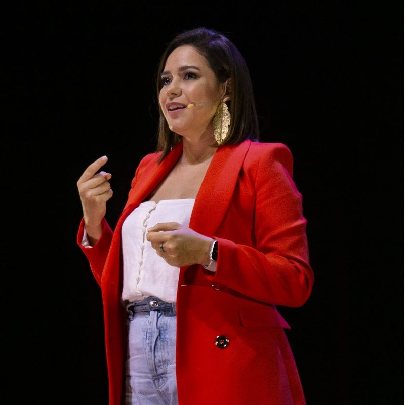
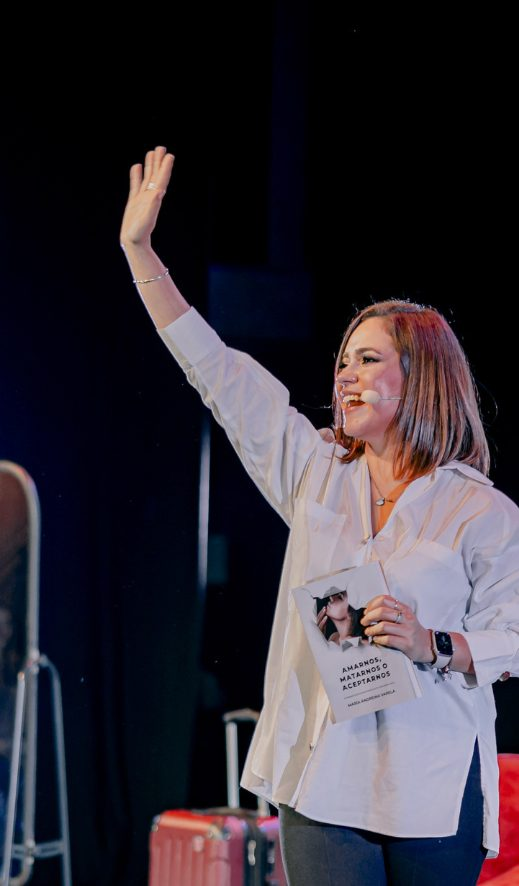

01
Tu mensaje raíz
Escrito y grabado.
La idea central desde la que hablas, creas y te posicionas.
KOL Claridad · Mentoría grupal en vivo para expertos · 4 semanas
El problema no es cuánto sabes. En 4 semanas encuentras tu mensaje raíz: la idea central desde la que hablas, creas y te posicionas. Sales con él escrito y grabado.
Inicia el 11 de noviembre de 2026 ·
Cupos limitados

¿Te reconoces aquí?
“Tengo muchísimo que decir.”
Pero cuando intento explicarlo, termino diciendo demasiado.
“Cada semana publico sobre algo distinto.”
Y nadie termina de entender qué me hace diferente.
“Sé hablar con mis clientes.”
Pero frente a una cámara me bloqueo.
“Tengo experiencia de sobra.”
Pero mis ingresos no reflejan mi nivel.
Coaches, terapeutas, consultores, médicos, abogados. No es falta de conocimiento. Es falta de una idea que lo ordene.
El cambio de perspectiva
Tu mensaje raíz es la idea central desde la que nace todo lo que comunicas: quién eres, a quién sirves y por qué deberían escucharte. Cuando lo encuentras, todo lo demás vuelve a ordenarse a su alrededor, incluida la forma en que cobras por lo que sabes.
El proceso
Cuatro encuentros semanales en vivo de 2 horas con Mariandre. Un recorrido para ordenar lo que sabes, encontrar la idea que lo sostiene todo y decirla con la voz de alguien que es referente.
Semana 1
Mié. 11 de nov. · 7 p. m. PanamáMiércoles 11 de noviembre · 7:00 p. m.Panamá
Identificas tu identidad como experto y lo que de verdad quieres decir.
Semana 2
Mié. 18 de nov. · 7 p. m. PanamáMiércoles 18 de noviembre · 7:00 p. m.Panamá
Defines el espacio de posicionamiento donde eres la referencia natural.
Semana 3 · El corazón del método
Mié. 25 de nov. · 7 p. m. PanamáMiércoles 25 de noviembre · 7:00 p. m.Panamá
Escribes la idea central desde la que nace todo tu contenido.
Semana 4 · La culminación
Mié. 2 de dic. · 7 p. m. PanamáMiércoles 2 de diciembre · 7:00 p. m.Panamá
Ahora que sabes qué decir, le das voz: grabas tu mensaje raíz con seguridad, presencia y autoridad.
Horario de los encuentros en vivo
Todos los miércoles · 2 horas en vivo
Del 11 de noviembre al 2 de diciembre
Centroamérica: Costa Rica, Nicaragua, Honduras, El Salvador y Guatemala. ¿Estás en otro país? Escríbenos por WhatsApp y te confirmamos tu hora.
Contenido semanal orientativo; Mariandre ajusta el ritmo al grupo.
Lo que queda en tus manos
01
Escrito y grabado.
La idea central desde la que hablas, creas y te posicionas.
02
Quién eres como experto.
La claridad sobre quién eres y qué quieres representar.
03
Dónde eres referencia.
El espacio desde el que quieres ser reconocido.
Para que te reconozcan como referente, atraigas clientes que paguen lo que vales y des charlas con autoridad.
Quiero mi mensaje raízTodo lo que recibes
Los 4 encuentros en vivo con Mariandre, más herramientas para cada etapa: claridad, voz, monetización, implementación y continuidad.
El programa
El corazón del proceso
Claridad
Ordenar y escribir tu mensaje
Voz
Hablar con seguridad y presencia
Monetización
Cobrar lo que vale tu conocimiento
Implementación
Aplicarlo desde el día uno
Continuidad
No quedarte solo después
Valor total del ecosistema
$2,103
$2,553 con el Bono 5 (Fundadora y VIP)
Bono 5 · 30 días de contenido hecho para ti
No sales del programa solo con un plan. Si te inscribes como Fundadora, Mariandre convierte tu mensaje raíz en 30 días de contenido planificado y listo para publicar.
Exclusivo para quienes se inscriban como Fundadora antes del 25 de octubre.
También incluido en la opción VIP · Valor de referencia $450
Encuentras tu mensaje raíz
Durante las 4 semanas del programa.
Mariandre lo convierte en contenido
Crea a partir de tu mensaje raíz las piezas de tu primer mes.
Tienes 30 días planificados
Sales con un plan y con publicaciones listas, no solo con un documento.

¿Por qué ella?
Neurocomunicadora, terapeuta y speaker TEDx
Durante más de 19 años ha acompañado a personas y profesionales a escucharse antes de hablar. Su método une neurociencia de la comunicación, empatía y escucha activa: primero claridad interna, después voz.
Autora
“Amarnos, matarnos o aceptarnos”
Un espacio para encontrarte con lo más íntimo de ti
Actriz y productora del monólogo A.M.A.
Escucha a Mariandre antes de decidir
Conferencia TEDx “El poder de tu voz” · Ver en YouTube
Testimonios
Mensajes de personas que vivieron un entrenamiento con Mariandre.
Antes
“Pasé mucho tiempo intentando comunicarme pero olvidaba mis palabras.”
Después
“¡Ayer logré hacer mi presentación! Gracias a tu guía en comunicación y el olor de la lavanda, recordé el mensaje más rápido y logré transmitirlo con seguridad.”
Antes
“A veces hay eventos que hacen que dudemos y hasta nos rompa la autoestima. Quizás eso ha callado mi voz interior al grado de no escucharme.”
Después
“Siempre es bueno poder conectarnos con nosotras mismas. Gracias por la clase de hoy.”
Lo que se llevó
“Lo que más me llevo de la sesión son las herramientas para cambiar la narrativa y mis pensamientos limitantes para comunicar mejor mi mensaje con confianza y aceptación de quién soy.”
“Me gustó el ejercicio de identificar nuestros pensamientos automáticos para cuestionarlos y reemplazarlos por otros más útiles y que nos empoderan.”
“Aprendí a identificar mis miedos y hacer un cambio poderoso de mis pensamientos. ¡Estoy agradecida por lo que viene!”
“Hoy me llevo nuevos pensamientos positivos sobre mí misma.”
“Me encantó lo que me dijiste y sí, voy a poner en práctica no tener miedo de hablar y expresarme como me gusta. Sé que puedo, soy valiente, soy fuerte y lo lograré.”
“La dinámica del espejo nunca la había realizado. Me parece poderosa. Definitivamente lo intentaré.”
“Gracias por una sesión transformadora, impecable. Admiro el trabajo que haces para ayudar a sanar, transformar y cambiar vidas siendo canal de luz, apoyo y contención.”
Doble garantía
Ven al primer encuentro. Si sientes que no es para ti, te devolvemos el 100% de tu inversión.
Si haces el proceso y no sales con tu mensaje raíz, Mariandre trabaja contigo 1:1 hasta que lo tengas.
Tu lugar en KOL Claridad Intensivo
Todas las opciones incluyen la doble garantía. Inicia el 11 de noviembre de 2026.
Fundadora · hasta el 25 de octubre
$597pago único
Incluye el Bono 5
30 días de contenido hecho para ti
Mariandre convierte tu mensaje raíz en un mes de publicaciones · Valor $450
Pago seguro con tarjeta o Yappy
Regular
$697pago único
Precio a partir del 26 de octubre
Plan de pagos
$397× 2 cuotas
Total $794 en dos pagos
VIP · Acompañamiento personal
$1,497pago único
Para quien quiere que Mariandre trabaje directamente sobre su mensaje.
Cupos muy limitados
El Bono 5 (30 días de contenido) está incluido en Fundadora y en VIP.
Preguntas frecuentes
Para expertos de cualquier área (coaches, terapeutas, consultores, médicos, abogados) que saben mucho pero sienten que su comunicación no refleja su nivel. Está pensado para profesionales de 30 a 50 años en Latinoamérica.
La cohorte inicia el 11 de noviembre de 2026. Son 4 encuentros semanales en vivo de 2 horas cada uno.
Es la idea central desde la que nace todo lo que comunicas: quién eres, a quién sirves y por qué deberían escucharte. Sales del programa con ese mensaje escrito y grabado, junto con tu mapa de identidad y tu territorio de posicionamiento.
No. El programa está diseñado justamente para quienes se congelan o se dispersan al hablar. Trabajamos primero la claridad interna y después la voz.
Primero: asiste al primer encuentro y, si sientes que no es para ti, te devolvemos el 100%. Segundo: si completas el proceso y no sales con tu mensaje raíz, Mariandre trabaja contigo 1-a-1 hasta que lo tengas.
Quienes se inscriben como Fundadora ($597 de contado, hasta el 25 de octubre) y quienes eligen la opción VIP. Mariandre convierte tu mensaje raíz en 30 días de contenido planificado para que salgas del programa con un plan y con publicaciones listas. Las opciones Regular y Plan de pagos no incluyen este bono.
Todo el programa y todos los bonos, incluido el Bono 5 (30 días de contenido), más 2 sesiones 1-a-1 con Mariandre y una revisión personal de tu mensaje raíz.
Con tarjeta a través de Stripe o con Yappy. También puedes elegir el plan de 2 cuotas de $397.
¿Tienes otra pregunta? Te responde una persona, no un bot.
Escribir por WhatsAppEscúchate, comunica e inspira
KOL Claridad Intensivo te lleva hasta ahí. Inicia el 11 de noviembre de 2026.
Elegir mi opción